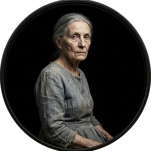
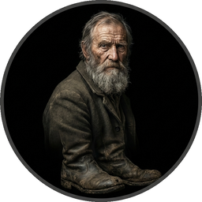

Cast of Characters
Click to hear their voice


Chapter I The Cyclone
Dorothy lived in the midst of the great Kansas prairies, with Uncle Henry, who was a farmer, and Aunt Em, who was the farmer’s wife. Their house was small, for the lumber to build it had to be carried by wagon many miles. There were four walls, a floor and a roof, which made one room; and this room contained a rusty looking cookstove, a cupboard for the dishes, a table, three or four chairs, and the beds. Uncle Henry and Aunt Em had a big bed in one corner, and Dorothy a little bed in another corner. There was no garret at all, and no cellar—except a small hole dug in the ground, called a cyclone cellar, where the family could go in case one of those great whirlwinds arose, mighty enough to crush any building in its path. It was reached by a trap door in the middle of the floor, from which a ladder led down into the small, dark hole.
When Dorothy stood in the doorway and looked around, she could see nothing but the great gray prairie on every side. Not a tree nor a house broke the broad sweep of flat country that reached to the edge of the sky in all directions. The sun had baked the plowed land into a gray mass, with little cracks running through it. Even the grass was not green, for the sun had burned the tops of the long blades until they were the same gray color to be seen everywhere. Once the house had been painted, but the sun blistered the paint and the rains washed it away, and now the house was as dull and gray as everything else.
When Aunt Em came there to live she was a young, pretty wife. The sun and wind had changed her, too. They had taken the sparkle from her eyes and left them a sober gray; they had taken the red from her cheeks and lips, and they were gray also. She was thin and gaunt, and never smiled now. When Dorothy, who was an orphan, first came to her, Aunt Em had been so startled by the child’s laughter that she would scream and press her hand upon her heart whenever Dorothy’s merry voice reached her ears; and she still looked at the little girl with wonder that she could find anything to laugh at.
Uncle Henry never laughed. He worked hard from morning till night and did not know what joy was. He was gray also, from his long beard to his rough boots, and he looked stern and solemn, and rarely spoke.
It was Toto that made Dorothy laugh, and saved her from growing as gray as her other surroundings. Toto was not gray; he was a little black dog, with long silky hair and small black eyes that twinkled merrily on either side of his funny, wee nose. Toto played all day long, and Dorothy played with him, and loved him dearly.
Today, however, they were not playing. Uncle Henry sat upon the doorstep and looked anxiously at the sky, which was even grayer than usual. Dorothy stood in the door with Toto in her arms, and looked at the sky too. Aunt Em was washing the dishes.
From the far north they heard a low wail of the wind, and Uncle Henry and Dorothy could see where the long grass bowed in waves before the coming storm. There now came a sharp whistling in the air from the south, and as they turned their eyes that way they saw ripples in the grass coming from that direction also.
Suddenly Uncle Henry stood up.
“There’s a cyclone coming, Em,” he called to his wife. “I’ll go look after the stock.” Then he ran toward the sheds where the cows and horses were kept.
Aunt Em dropped her work and came to the door. One glance told her of the danger close at hand.
“Quick, Dorothy!” she screamed. “Run for the cellar!”
Toto jumped out of Dorothy’s arms and hid under the bed, and the girl started to get him. Aunt Em, badly frightened, threw open the trap door in the floor and climbed down the ladder into the small, dark hole. Dorothy caught Toto at last and started to follow her aunt. When she was halfway across the room there came a great shriek from the wind, and the house shook so hard that she lost her footing and sat down suddenly upon the floor.
Then a strange thing happened.
The house whirled around two or three times and rose slowly through the air. Dorothy felt as if she were going up in a balloon.
The north and south winds met where the house stood, and made it the exact center of the cyclone. In the middle of a cyclone the air is generally still, but the great pressure of the wind on every side of the house raised it up higher and higher, until it was at the very top of the cyclone; and there it remained and was carried miles and miles away as easily as you could carry a feather.
It was very dark, and the wind howled horribly around her, but Dorothy found she was riding quite easily. After the first few whirls around, and one other time when the house tipped badly, she felt as if she were being rocked gently, like a baby in a cradle.
Toto did not like it. He ran about the room, now here, now there, barking loudly; but Dorothy sat quite still on the floor and waited to see what would happen.
Once Toto got too near the open trap door, and fell in; and at first the little girl thought she had lost him. But soon she saw one of his ears sticking up through the hole, for the strong pressure of the air was keeping him up so that he could not fall. She crept to the hole, caught Toto by the ear, and dragged him into the room again, afterward closing the trap door so that no more accidents could happen.
Hour after hour passed away, and slowly Dorothy got over her fright; but she felt quite lonely, and the wind shrieked so loudly all about her that she nearly became deaf. At first she had wondered if she would be dashed to pieces when the house fell again; but as the hours passed and nothing terrible happened, she stopped worrying and resolved to wait calmly and see what the future would bring. At last she crawled over the swaying floor to her bed, and lay down upon it; and Toto followed and lay down beside her.
In spite of the swaying of the house and the wailing of the wind, Dorothy soon closed her eyes and fell fast asleep.